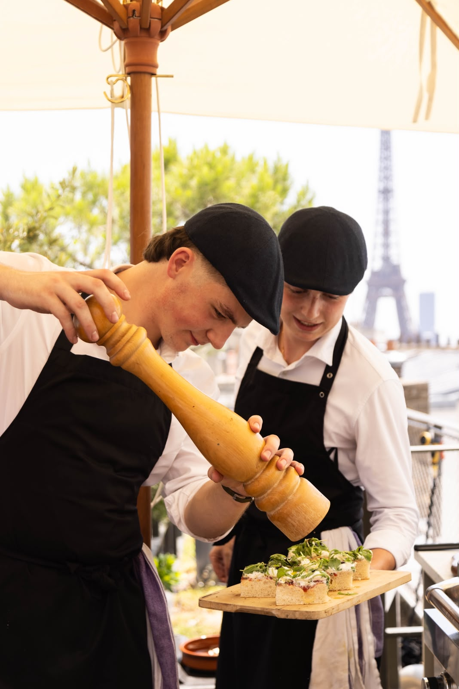

DJ, sonorisation L-Acoustics & événements à Paris et dans toute la France
Mariages, soirées d'entreprise, séminaires, rallyes et anniversaires de 40 à 5 000 personnes : diffusion L-Acoustics, micros sans fil Shure, éclairage piloté, borne photo vintage et traiteur. Prestations complètes à partir de 1 400 €, location dès 60 € et devis détaillé sous 24 heures.
- +120événements animés (5/5)
- 40 à 5 000invités (L-Acoustics & Shure)
- Dès 1 400 €prestation DJ & sono complète
- 24 hpour recevoir votre devis
Une maison née derrière les platines
Spectre Events a été fondée par Maxime Feltin et Andéol. Nous avons commencé comme DJs, dans des soirées privées, des rallyes et des anniversaires, avant de rejoindre les mariages puis les soirées d'entreprise et séminaires. Au fil de plus de 120 prestations, les mêmes traiteurs, photographes et lieux de réception sont devenus des partenaires de confiance, et nos clients ont commencé à nous confier bien davantage que la musique.
Nous sommes partis d'un constat simple : un événement réussi se juge autant à ce que l'on voit qu'à ce que l'on entend. Une enceinte posée au hasard, un câble qui traverse la salle ou une régie mal habillée suffisent à abîmer un beau décor. Nous voulions des installations aussi soignées que les lieux qui les accueillent, et un son à la hauteur.
Le nom Spectre fait référence au spectre sonore, l'ensemble des fréquences que l'on équilibre pour obtenir un rendu juste. Il résume notre façon de travailler : une installation élégante, un son L-Acoustics maîtrisé, une présence discrète.
Ce qui nous distingue
Des installations élégantes
Pieds et totems sobres, régie habillée, câbles rangés et dissimulés autant que le lieu le permet : l'installation s'accorde à votre salle au lieu de s'y imposer. Elle se fond dans le décor d'un château comme dans celui d'un showroom.
Un matériel de référence
Enceintes L-Acoustics (12XT, caissons SB118, amplificateurs LA4), micros sans fil Shure HF, tables Yamaha MG12 et éclairages pilotés en direct par console DMX Wolfmix. Ce matériel nous appartient et nous l'entretenons nous-mêmes.
Le sens de la solution
Une prise trop éloignée, une salle réaménagée la veille, un horaire qui glisse : chaque événement réserve sa part d'imprévus. Notre rôle est de les régler sans que vos invités s'en aperçoivent, avec du matériel de secours et une bonne dose de débrouillardise.
Une présence discrète
Tenue soignée, gestes mesurés, attention constante au déroulé : nous sommes là quand vous avez besoin de nous et invisibles le reste du temps. Vos invités retiennent l'ambiance, pas l'équipe technique.
Toutes les prestations, un seul nom
Son, lumière, DJ, borne photo, photographe, traiteur : nous réunissons l'ensemble avec des partenaires de confiance, avec qui nous travaillons depuis longtemps. Vous gagnez du temps, et votre événement garde une vraie cohérence.
Une attention de chaque instant
Un devis sous 24 heures, une réponse rapide à chaque question, des rendez-vous autant que nécessaire. Nous traitons chaque mariage, soirée d'entreprise, rallye ou anniversaire comme le plus important.
Nos prestations & formules
Mariages, soirées d'entreprise, séminaires, rallyes ou anniversaires de 40 à 5 000 personnes : chaque prestation peut être réservée seule ou réunie dans une organisation complète à Paris et dans toute la France. Vous préparez un événement d'entreprise ? Découvrez notre organisation clé en main.

Sonorisation & DJ
Diffusion L-Acoustics, micros sans fil Shure, mise en lumière et DJ dès 600 €, pour mariages, soirées d'entreprise, rallyes et anniversaires.
Découvrir (dès 1 400 €)
Photographie
Une borne photo vintage aux impressions illimitées dès 400 €, ou un photographe professionnel pour chaque temps fort.
Découvrir (dès 400 €)
Traiteur
Avec notre partenaire Beret et Papilles : cocktails, dîners assis ou buffets à la braise, à partir de produits locaux et de saison.
Découvrir
Location de matériel
Sonorisation et éclairage à louer dès 60 € à Paris et dans toute la France : enceintes 200 W (120 €) ou système L-Acoustics (300 €).
Découvrir (dès 60 €)Grille comparative de nos offres & tarifs d'appel
Tarifs indicatifs TTC à Paris et dans toute la France. Chaque projet fait l'objet d'un devis gratuit détaillé poste par poste sous 24 heures.
| Formule / Offre | Événements & Capacité | Matériel & Prestations incluses | Zone couverte | Tarif indicatif |
|---|---|---|---|---|
| Pack Mariage (DJ + Son + Lumière) | Mariage, cérémonie, cocktail & soirée dansante (50 à 500+ pers.) | DJ, diffusion L-Acoustics, micros sans fil Shure, éclairage piloté en direct, rendez-vous de préparation, montage anticipé | Paris & toute la France | À partir de 1 400 € |
| Pack Corporate & Soirée d'Entreprise | Séminaire, convention, inauguration, soirée corporate (40 à 5 000 pers.) | Sonorisation L-Acoustics jusqu'à 1 000 m², micros HF Shure discours, éclairage architectural, DJ set sur mesure (option clé en main traiteur/lieu/photo) | Paris & toute la France | À partir de 800 € |
| Pack Rallye, Anniversaire & Soirée Privée | Rallye, anniversaire, gala étudiant, réception privée (50 à 5 000 pers.) | Système L-Acoustics haute puissance (12XT & caissons SB118), lyres Wash sur totems, PAR LED sur batterie, console DMX Wolfmix, DJ | Paris & toute la France | À partir de 600 € |
| Pack Borne Photo Vintage (Photobooth) | Mariage, soirée d'entreprise, anniversaire, rallye (toutes jauges) | Livraison et installation, impressions illimitées sur papier photo, cadre personnalisé, galerie numérique en ligne | Paris & toute la France | À partir de 400 € |
| Pack Essentiel Location (Son ou Lumière seul) | Cocktail, conférence, fête privée en autonomie (50 à 400 pers.) | Petite sono 2×200 W + micro Shure (120 €), Grosse sono L-Acoustics 12XT + SB118 (300 €), Lumières sobres (60 €) ou immersives (150 €) | Paris & toute la France (livraison possible) | De 60 € à 300 € |
Pour chaque moment de votre événement
Cocktails, séminaires et réceptions
Lors d'un cocktail, d'une inauguration ou d'un séminaire d'entreprise, la parole compte autant que la musique. Nous installons des micros sans fil Shure et une diffusion L-Acoustics calibrée pour que chaque discours soit entendu jusqu'au fond de la salle.
Discours & ambianceMariages, rallyes et soirées dansantes
D'un mariage en château à un rallye ou un anniversaire à Paris, nous lisons la salle et adaptons la sélection musicale à votre public. Le son reste puissant sur la piste et confortable autour, de 50 à 500 personnes et jusqu'à 5 000 invités.
DJ & mise en lumièreÀ la carte ou clé en main
Certains clients nous confient uniquement la sonorisation ou le DJ (dès 1 400 €), d'autres l'organisation complète de leur soirée d'entreprise ou mariage : coordination du traiteur Beret et Papilles, de la borne photo et du lieu avec un interlocuteur unique.
Une prestation ou l'ensembleNos engagements
Un événement engage l'image de celui qui l'organise, qu'il s'agisse d'une entreprise ou d'une famille. Voici les principes que nous appliquons à chaque prestation, quelle que soit sa taille.
Un interlocuteur unique
Votre projet est suivi personnellement par l'un des fondateurs (Maxime Feltin ou Andéol), qui reste votre contact privilégié. Vous n'avez pas à répéter vos attentes à plusieurs personnes, ni à coordonner vous-même les différents prestataires.
Une préparation approfondie
Avant chaque événement, nous organisons plusieurs rendez-vous pour comprendre précisément vos attentes : déroulé de la soirée, horaires des prises de parole, ambiance souhaitée, contraintes du lieu. Lorsque c'est utile, nous visitons la salle en amont.
Une installation prête avant vos invités
Nous arrivons largement en avance pour installer, régler et vérifier chaque élément L-Acoustics et Shure, et disposons toujours de matériel de secours. Celui qui assure la soirée est aussi celui qui a monté l'installation.
Une tarification transparente
Chaque devis détaille l'ensemble des postes, du matériel à la main-d'œuvre, afin que vous sachiez précisément ce que vous financez. Nos prestations DJ et sonorisation débutent à 1 400 € TTC, et votre devis gratuit vous parvient sous 24 heures.
Ils nous ont fait confiance
Plus de 120 événements animés (note moyenne 5,0/5) pour des soirées d'entreprise, mariages, rallyes et anniversaires à Paris et en France.
★★★★★ « Grâce à votre implication, cet événement a été un véritable succès ! »
★★★★★ « Merci encore pour cette superbe soirée, on a eu que des compliments sur la musique ! »
★★★★★ « C'était vraiment top, notre DJ a été excellent ! »
★★★★★ « DJ très sympathique et pro. Matériel de qualité. Bon rapport qualité prix. Je recommande ! »
Questions fréquentes
Quels sont les tarifs d'un DJ et d'une sonorisation ?
Une prestation complète comprenant le DJ, la sonorisation professionnelle L-Acoustics, les micros sans fil Shure et la mise en lumière démarre à partir de 600 € TTC pour un rallye, anniversaire ou soirée privée, à partir de 800 € TTC pour une soirée d'entreprise ou un séminaire, et à partir de 1 400 € TTC pour un mariage. En options, le bar à vinyles (+500 disques) est à +300 €, la borne photo vintage débute à 400 € et la location autonome de matériel seul va de 60 € à 300 €. Vous recevez un devis gratuit détaillé poste par poste sous 24 heures.
Comment réserver et quelles sont les modalités d'acompte ?
Après un premier échange sur votre projet et l'envoi de votre devis détaillé sous 24 heures, la réservation de votre date est définitivement confirmée à la signature du devis accompagnée du règlement d'un acompte.
Quel matériel de sonorisation et d'éclairage est fourni ?
Nous intervenons avec notre propre parc matériel : enceintes L-Acoustics 12XT (380 W RMS), caissons de basses L-Acoustics SB118 (600 W RMS), amplificateurs LA4, micros sans fil Shure HF, tables de mixage Yamaha MG12, lyres Wash sur totems, projecteurs PAR LED sur batterie et régie DMX Wolfmix, avec matériel de secours systématique.
Quelle capacité d'accueil pouvez-vous sonoriser ?
Nous couvrons de 40 à 500 personnes en configuration standard (mariages, séminaires, anniversaires, soirées d'entreprise) et jusqu'à 5 000 personnes pour les grands galas, conventions et rallyes. Le système L-Acoustics est dimensionné selon l'acoustique de la salle ou du plein air.
Où intervenez-vous et quand a lieu l'installation ?
Nous intervenons à Paris et dans toute la France. L'installation, l'habillage de la régie et les balances acoustiques sont réalisés plusieurs heures avant l'arrivée de vos invités.
Parlons de votre prochain événement.
Indiquez-nous la date, le lieu et le nombre d'invités. Nous revenons vers vous pour échanger sur votre projet, et vous recevez un devis détaillé sous 24 heures.